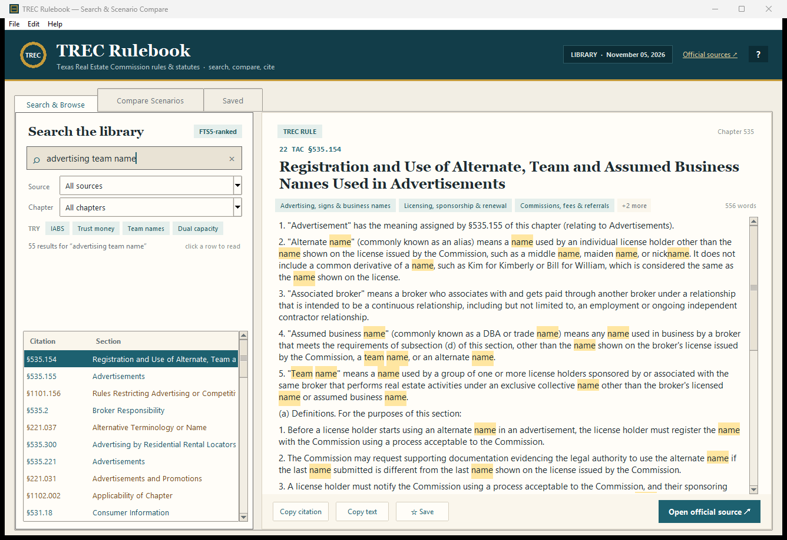
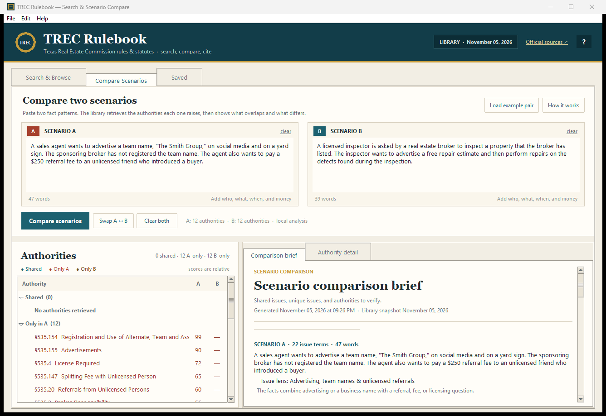

Find the section, not just a page
Full-text search with BM25 ranking, chapter filters, exact citation lookup, and highlighted matches. Search “trust money,” “IABS,” or “535.155” and get the section itself.
A free Windows desktop app for the Texas Real Estate Commission rules and the statutes behind them. Find a section, read the full text, compare two scenarios, and copy a citation without losing your place.
Free · Windows 10/11 · No account · Works offline

Whether you are checking an advertising rule, a disclosure deadline, or an inspector’s dual-capacity limit, the answer should not require five browser tabs.
Full-text search with BM25 ranking, chapter filters, exact citation lookup, and highlighted matches. Search “trust money,” “IABS,” or “535.155” and get the section itself.
Paste Scenario A and Scenario B. The app shows shared issues, unique issues, the authorities each one raises, and requirement-style sentences worth checking.
Copy a citation or the full section, save a bookmark, add a note, and open the official TREC or Texas Legislature source in one click.
TREC Rulebook bundles the TREC rules page, the four core TREC statute chapters, and related licensing law. The app reads the full section, preserves the citation, and keeps the official source one click away.
A client asks about advertising a team name. Another asks about an inspector repairing a defect. The rules that matter are not the same. Paste both scenarios and get a research brief that separates shared issues from scenario-specific authorities.

Built from the public TREC rules page and the statutes linked from TREC’s Rules and Laws page. Snapshot: November 5, 2026.
The library is a research snapshot, not an official reporter. Verify current text at the TREC rules page and the Texas Constitution and Statutes.
No account, no setup wizard, no cloud upload.
Use the portable Windows ZIP or the single EXE from GitHub Releases. The library is already bundled.
Type a phrase or section number, or paste two scenarios into the comparison tab.
Read the full text, copy the citation, save a note, and open the official source to confirm.
Common questions about the app, the library, and the limits of the research aid.
TREC Rulebook is a free Windows desktop app for searching Texas Real Estate Commission rules and the statutes TREC links from its Rules and Laws page. It includes full-text search, citations, official source links, bookmarks, notes, and side-by-side scenario comparison.
Yes. It includes 205 TREC rule sections plus 310 statutory sections: the Real Estate License Act (Occupations Code chapter 1101), the Inspector Act (chapter 1102), TREC self-directed status (chapter 1105), the Timeshare Act (Property Code chapter 221), and criminal-conviction consequences (Occupations Code chapter 53).
Yes. Paste two fact patterns into the Compare Scenarios tab. The app retrieves the authorities each scenario raises, shows shared and unique issues, and produces a brief with citations and requirement-style sentences to verify.
Yes. The app is free and the source code is public on GitHub. Download the Windows build from GitHub Releases; no account is required.
Yes. The rules and statutes are bundled with the app. Search, comparison, bookmarks, and notes work without a network connection. Official source links open in your browser when you choose them.
When online, the app checks the public TREC and Texas Legislature pages at most once every 24 hours. A changed library is staged in your Windows app-data folder. Use Tools → Reload updated library to apply it immediately, or restart the app. The bundled library is never overwritten.
No. The comparison extracts deadline and consequence language and lists facts to confirm. It does not decide which deadline, right, penalty, or rule controls. Verify the triggering event, counting rule, and official text.
No. It is an educational research aid. The Texas Secretary of State maintains the official rule text and the Legislature maintains the statutes. Verify every citation against the official source before relying on it.
Free for Windows 10 and 11. The portable ZIP is recommended; the single EXE is the smallest download.
No installer · No account · Library included · v1.1.0